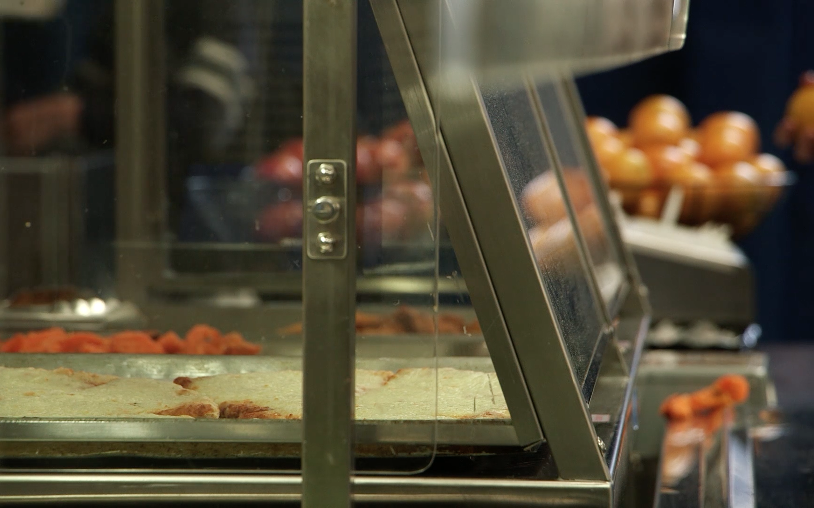
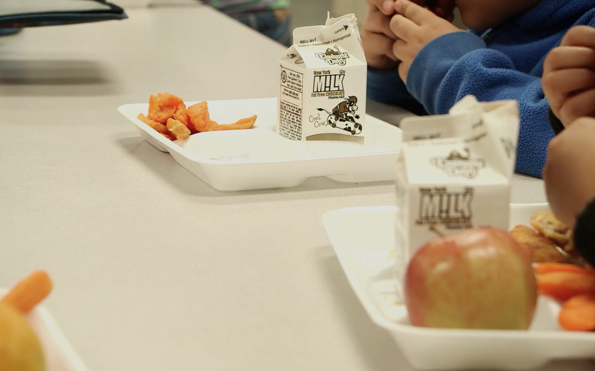

No such thing as a free lunch
New York City's new mayor, Bill de Blasio, came to power promising to make school lunches free for all public school children.
De Blasio's executive city budget, released on May 9, did not include the free school lunch program, but the mayor says he hopes to implement it in the future.
It's report card time: how does the current school lunches program measure up?

"Free-free"
Around 780,000 of the 1.1 million children currently enrolled in NYC public schools qualify for a free or reduced-price lunch (which costs parents $0.70) due to their family's incomes, but only 530,000 of those children are enrolled in the program. One of the reasons, says the City Council, who is pushing hard for universal meals, is the stigma attached to free lunches.
For years, they have been dubbed "free-free", meaning some children avoid them because of teasing from other kids, explains Karina Heath, a 15-year-old student at Brooklyn's Urban Assembly School for Music and Art.

About 18 percent of children and teenagers in the United States are obese or overweight in the United States, according to the American Heart Association. First Lady Michelle Obama’s “Let’s Move!” campaign has been pushing for healthier school lunches since 2010.
In 2012, new federal regulations were imposed to standardize portion and calorie sizes across the country. But strict federal regulations to improve the healthiness of school lunches ironically can make it more difficult to improve the menu in an individual school, listensays Midtown West Principal Ryan Bourke.

Each menu, made monthly by New York’s Department of Education, includes five components: a meat component or its alternative, fruit, vegetable, grain and milk. A child must choose at least three of these.
The most common hot food served in New York City public schools is cheese pizza. Pizza counts as a grain and as a meat alternative, as the melted cheese is protein. The pizza is divisive, with Karina saying she’s sick of it.

Each menu, made monthly by New York’s Department of Education, includes five components: a meat component or its alternative, fruit, vegetable, grain and milk. A child must choose at least three of these.
The most common hot food served in New York City public schools is cheese pizza. Pizza counts as a grain and as a meat alternative, as the melted cheese is protein. The pizza is divisive, with Karina saying she’s sick of it.
Design: Amber Jamieson Text: Amber Jamieson and Marie-Jose Daoud